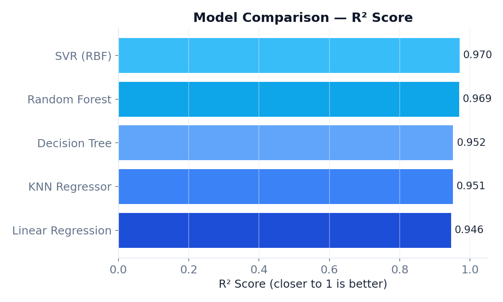
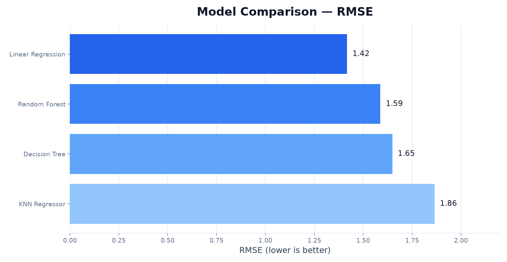
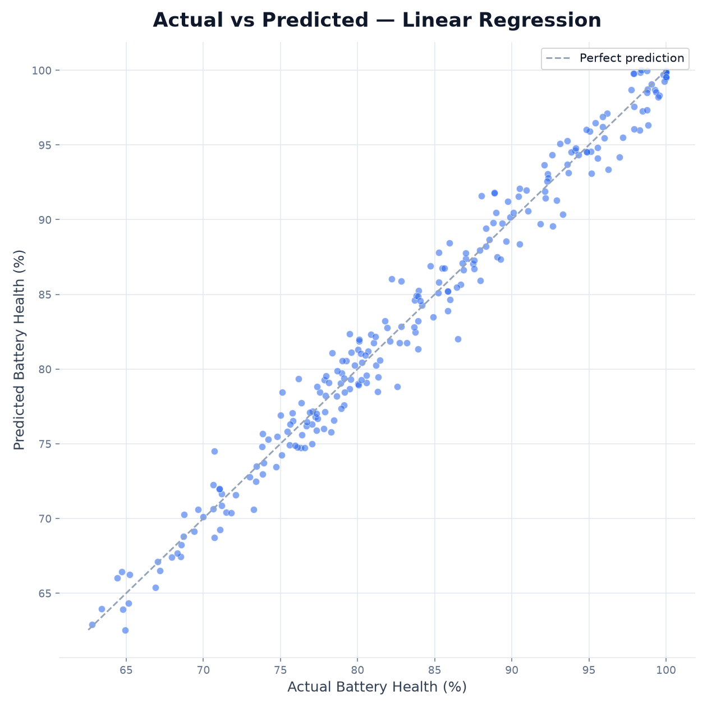
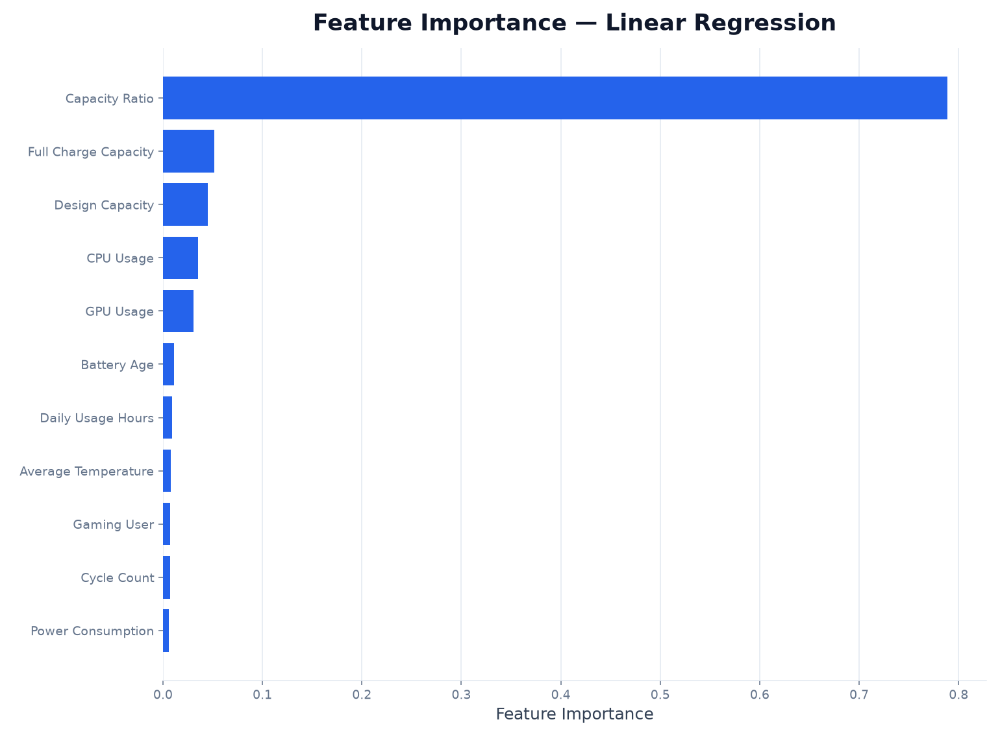
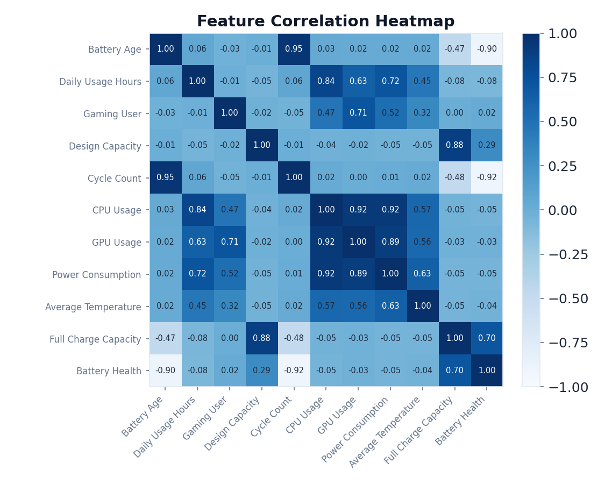

Machine Learning Project — Battery Health Prediction
แบตเตอรี่ของ Laptop เสื่อมสภาพลงตามการใช้งาน แต่ผู้ใช้ทั่วไปมักไม่รู้ว่าแบตเตอรี่ของตัวเอง เหลือ "สุขภาพ" (Battery Health) อยู่กี่เปอร์เซ็นต์ จนกว่าจะสังเกตได้ว่าใช้งานได้สั้นลงอย่างชัดเจน โปรเจกต์นี้จึงตั้งโจทย์เป็นปัญหา Regression คือ ทำนายค่า Battery Health (%) ซึ่งเป็นตัวเลขต่อเนื่อง จากพฤติกรรมการใช้งานและค่าที่วัดได้จากฮาร์ดแวร์ เพื่อให้ผู้ใช้ประเมินสภาพแบตเตอรี่ล่วงหน้าได้ โดยไม่ต้องรอให้เครื่องมือวัดแบตเตอรี่แจ้งเตือน
เหตุผลที่เลือกใช้ Dataset ชุดนี้: (1) เป็นปัญหาที่ใกล้ตัวและนำไปใช้ได้จริง เจ้าของเครื่องทุกคนอยากรู้ว่า แบตเตอรี่ของตัวเองเหลือสภาพเท่าไร (2) ข้อมูลเป็นตัวเลขล้วน ไม่มีค่าว่าง เหมาะสำหรับฝึกเทียบโมเดล Regression หลายแบบในเวลาจำกัด (3) ฟีเจอร์ในชุดข้อมูลผสมทั้งด้านพฤติกรรมผู้ใช้ (ชั่วโมงใช้งาน, เล่นเกมหรือไม่) และค่าฮาร์ดแวร์/การสึกหรอ (จำนวนรอบชาร์จ, อุณหภูมิ, ความจุที่ชาร์จได้จริง) ทำให้เห็นภาพว่าปัจจัยใดมีผลต่อ สุขภาพแบตเตอรี่มากที่สุดผ่านขั้นตอน Feature Importance ในหัวข้อถัดไป
| ฟีเจอร์ | ความหมาย | ช่วงค่าในข้อมูล |
|---|---|---|
| Battery Age | อายุแบตเตอรี่ (ปี) | 0 – 9 |
| Daily Usage Hours | ชั่วโมงใช้งานเฉลี่ยต่อวัน | 1.0 – 12.0 |
| Gaming User | เป็นผู้ใช้สายเกม (0/1) | 0, 1 |
| Design Capacity | ความจุตามสเปกโรงงาน (mAh) | 45,002 – 79,959 |
| Cycle Count | จำนวนรอบชาร์จสะสม | 0 – 1,500 |
| CPU Usage | เปอร์เซ็นต์การใช้งาน CPU เฉลี่ย | 9.2 – 100 |
| GPU Usage | เปอร์เซ็นต์การใช้งาน GPU เฉลี่ย | 5.0 – 98.3 |
| Power Consumption | กำลังไฟที่ใช้ (วัตต์) | 20.1 – 137.2 |
| Average Temperature | อุณหภูมิเฉลี่ยขณะใช้งาน (°C) | 22.9 – 39.9 |
| Full Charge Capacity | ความจุจริงที่ชาร์จได้เต็ม (mAh) | 28,181 – 79,263 |
| Battery Health (target) | สุขภาพแบตเตอรี่ปัจจุบัน (%) | 59.8 – 100 |
ก่อนนำข้อมูลไปเทรนโมเดล ได้ตรวจสอบและเตรียมข้อมูลตามขั้นตอนต่อไปนี้:
ตรวจด้วย df.isnull().sum() พบว่าทั้ง 11 คอลัมน์ไม่มีค่าว่างเลยสักแถว จึงไม่ต้องทำ Imputation เพิ่มเติม
ตรวจด้วย df.duplicated().sum() ผลลัพธ์เท่ากับ 0 แถว จึงไม่ต้องลบข้อมูลซ้ำออก
พบค่าที่หลุดกรอบ IQR เล็กน้อยใน GPU Usage, Power Consumption และ Average Temperature แต่เมื่อตรวจดูค่าจริงแล้วยังอยู่ในช่วงที่เป็นไปได้ของการใช้งานเครื่องจริง (เช่น เล่นเกม/เรนเดอร์วิดีโอหนัก ๆ) จึงตัดสินใจเก็บข้อมูลไว้ทั้งหมด ไม่ลบทิ้ง เพื่อไม่ให้โมเดลเสียสัญญาณของการใช้งานหนักไป
แบ่งข้อมูลด้วย train_test_split อัตราส่วน 80:20 (เทรน 960 แถว / ทดสอบ 240 แถว)
กำหนด random_state=42 เพื่อให้ผลลัพธ์ทำซ้ำได้
ใช้ StandardScaler แปลงทุกฟีเจอร์ให้มีค่าเฉลี่ย 0 และส่วนเบี่ยงเบนมาตรฐาน 1
โดย fit จากชุด Train เท่านั้นแล้วนำไป transform ชุด Test ขั้นตอนนี้จำเป็นมากสำหรับโมเดลที่วัดระยะทาง
อย่าง KNN และ SVR เพราะฟีเจอร์ในข้อมูลมีหน่วยต่างกันมาก (เช่น mAh หลักหมื่น เทียบกับเปอร์เซ็นต์การใช้งาน 0–100)
เพื่อหาว่าอัลกอริทึมใดเหมาะกับการทำนาย Battery Health มากที่สุด จึงเทรนโมเดล Regression 5 แบบ บนข้อมูลชุดเดียวกัน แล้วเปรียบเทียบผลในหัวข้อถัดไป
หาสมการเส้นตรงในรูป y = w₁x₁ + w₂x₂ + ... + wₙxₙ + b ที่ทำให้ผลรวมของ
ค่าความคลาดเคลื่อนกำลังสอง (Sum of Squared Errors) ระหว่างค่าจริงกับค่าทำนายน้อยที่สุด (Ordinary Least Squares)
ข้อดีคือตีความง่ายว่าฟีเจอร์ใดมีน้ำหนัก (weight) มาก แต่จะทำนายได้แม่นก็ต่อเมื่อความสัมพันธ์ระหว่างฟีเจอร์กับ
เป้าหมายเป็นเส้นตรงจริง ๆ ใช้เป็นตัวเทียบมาตรฐาน (baseline) ของโปรเจกต์นี้
ไม่มีขั้นตอน "เทรน" สมการใด ๆ แต่เก็บข้อมูลทั้งหมดไว้ เมื่อต้องทำนายค่าของแล็ปท็อปเครื่องใหม่ โมเดลจะคำนวณระยะห่าง (Euclidean Distance) ไปยังข้อมูลทุกแถวในชุด Train แล้วเลือก k เพื่อนบ้านที่ใกล้ที่สุด (โปรเจกต์นี้ตั้ง k = 7) จากนั้นทำนายค่าด้วยค่าเฉลี่ยของ Battery Health ของเพื่อนบ้านทั้ง 7 เครื่องนั้น เพราะอิงระยะทางโดยตรง จึงไวต่อสเกลของฟีเจอร์มาก — เป็นเหตุผลหลักที่ต้องทำ Feature Scaling ก่อน
แบ่งข้อมูลออกเป็นกิ่ง ๆ ทีละขั้นด้วยเงื่อนไข if/else บนฟีเจอร์ตัวใดตัวหนึ่ง (เช่น "Cycle Count > 800 หรือไม่") โดยเลือกจุดแบ่งที่ลดค่าความแปรปรวน (Variance / MSE) ของ Battery Health ในแต่ละกิ่งให้มากที่สุด ทำซ้ำจนถึงใบ (leaf) แล้วทำนายด้วยค่าเฉลี่ยของข้อมูลในใบนั้น อ่านผลลัพธ์เป็นเงื่อนไขที่มนุษย์เข้าใจได้ง่าย แต่ถ้าปล่อยให้ต้นไม้ลึกเกินไปจะจำข้อมูล Train มากเกินไป (Overfitting) จึงจำกัดความลึกไว้ที่ 6 ระดับ
สร้าง Decision Tree จำนวนมาก (โปรเจกต์นี้ใช้ 300 ต้น) โดยแต่ละต้นเทรนจากข้อมูลที่สุ่มเลือกแบบใส่คืน (Bootstrap Sampling) และสุ่มเลือกฟีเจอร์บางส่วนในแต่ละจุดแบ่ง แล้วนำค่าที่แต่ละต้นทำนายมาเฉลี่ยรวมกัน เป็นคำตอบสุดท้าย หลักการนี้ช่วยลดความแปรปรวน (Variance) และ Overfitting ที่มักเกิดกับ Decision Tree ต้นเดียว ทำให้แม่นยำและมีเสถียรภาพมากขึ้น
พยายามหาฟังก์ชันที่ทำนายค่าให้อยู่ภายในขอบเขตความคลาดเคลื่อนที่ยอมรับได้ (epsilon-tube) รอบแนวโน้มของข้อมูล จุดข้อมูลที่อยู่นอกขอบเขตนี้เท่านั้นที่จะมีผลต่อการปรับโมเดล (เรียกว่า Support Vectors) โปรเจกต์นี้ใช้ RBF Kernel ซึ่งแปลงข้อมูลไปอยู่ในมิติที่สูงขึ้นโดยปริยาย (kernel trick) ทำให้จับความสัมพันธ์ แบบไม่เป็นเส้นตรง (non-linear) ระหว่างฟีเจอร์กับ Battery Health ได้ดี พารามิเตอร์ที่ปรับคือ C = 10 (ควบคุมความเข้มงวดต่อความคลาดเคลื่อน) และ epsilon = 0.5
ประเมินโมเดลทั้ง 5 แบบด้วยชุด Test (240 แถว) โดยใช้ 3 ตัวชี้วัดหลัก: MAE (ค่าคลาดเคลื่อนเฉลี่ยสัมบูรณ์ ยิ่งน้อยยิ่งดี), RMSE (ค่าคลาดเคลื่อนกำลังสองเฉลี่ยแบบถอดราก ยิ่งน้อยยิ่งดี และลงโทษข้อผิดพลาดก้อนใหญ่หนักกว่า) และ R² Score (สัดส่วนความแปรปรวนของ Battery Health ที่โมเดลอธิบายได้ ยิ่งใกล้ 1 ยิ่งดี)
| โมเดล | MAE | RMSE | R² Score |
|---|---|---|---|
| SVR (RBF) ดีที่สุด | 1.36 | 1.69 | 0.970 |
| Random Forest | 1.38 | 1.72 | 0.969 |
| Decision Tree | 1.69 | 2.14 | 0.952 |
| KNN Regressor | 1.72 | 2.15 | 0.951 |
| Linear Regression | 1.79 | 2.26 | 0.946 |





สรุปผล: SVR (RBF) ให้ผลแม่นยำที่สุด (R² = 0.970) ตามมาด้วย Random Forest ที่ใกล้เคียงกันมาก (R² = 0.969) ทั้งสองแบบทำผลได้ดีกว่า Linear Regression ชัดเจน สะท้อนว่าความสัมพันธ์ระหว่างฟีเจอร์กับ Battery Health มีความไม่เป็นเส้นตรงอยู่บ้าง จากกราฟ Feature Importance พบว่า Cycle Count (จำนวนรอบชาร์จ) และ Full Charge Capacity (ความจุที่ชาร์จได้จริง) เป็นสองปัจจัยที่มีผลต่อการทำนายมากที่สุดอย่างชัดเจน ซึ่งสอดคล้องกับหลักการเสื่อมสภาพแบตเตอรี่ในโลกจริง
โมเดลที่ดีที่สุดจากการเปรียบเทียบถูกนำไป deploy เป็นเว็บแอปด้วย Streamlit ให้ผู้ใช้กรอกค่าการใช้งาน แล็ปท็อปของตัวเอง แล้วรับค่าทำนายสุขภาพแบตเตอรี่ได้ทันทีแบบ interactive
ผู้ใช้ปรับค่าฟีเจอร์ต่าง ๆ ผ่าน slider/input บนหน้าเว็บ เช่น:
แล้วแอปจะแสดงเปอร์เซ็นต์ Battery Health ที่โมเดลทำนายออกมาให้ทันที
regression-edpfswfritzitnat3kvu8z.streamlit.app